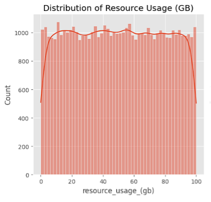
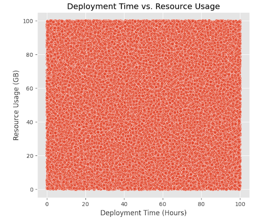

Predicting Insurance Costs: Linear Regression
Built a predictive model to estimate individual medical insurance charges based on demographics and lifestyle factors, using EDA and regression modeling.
The Problem: What Did I Solve?
In the healthcare insurance industry, accurately pricing premiums is crucial. Overpricing may drive away potential customers,
underpricing can harm the company's bottom line. The goal of this project was to explore how individual demographics and habits
affect medical insurance charges, and whether we can predict future charges using these features.
But there's a twist: the original "charges" data is highly skewed, and not all features contribute equally. This project goes beyond
building a model, it uncovers hidden relationships and tells a story about how lifestyle choices (like smoking) can impact costs.
Dataset preview
Who Is This For?
This project is built for:
- Insurance Analysts: to support underwriting and pricing decisions.
- Healthcare Policy Strategists: to identify high-risk populations.
- Machine Learning Learners: to understand the value of EDA and preprocessing.
It’s also a portfolio piece that shows how I think as a data analyst, how I explore a messy dataset, decide what's worth modeling, and explain results clearly.
My Approach- Step by Step
1. Data Exploration (EDA)
First, I performed an initial inspection of the dataset, checking for:
- Data types
- Null values (none found)
- Skewness in the
chargesvariable
Histogram of charges: Below screenshot shows the heavy right skew, motivating a log transformation.
Histogram of log_charges:To address this skew, I applied a log2 transformation on charges, making
the variable better suited for regression.

2. Feature Selection & Visualization
Good data analysts know that how you shape your data affects what it can reveal.
Using correlation analysis and visual tools like pairplots and boxplots, I narrowed the features down to:
agebmismoker
This simplification helps algorithms process the data more effectively and enables clear business interpretation: being a smoker adds $X to expected costs.
Heatmap of correlations: Demonstrates which variables most influence charges.
Boxplots of log_charges by gender, smoker, and regionT
3. Data Transformation
I engineered a new feature:
insurance["is_smoker"] = (insurance["smoker"] == "yes")
This binary transformation simplifies model interpretation and increases accuracy.

4. Model Building
- K-Means (4 clusters): Identified patterns such as high efficiency + low usage and low efficiency + high cost
- Hierarchical Clustering validated K-Means structure
- DBSCAN didn’t perform well due to uniform density in the data
Clustering gave far clearer insights than regression. It helped segment deployments into actionable groups for optimization.
 What Business Questions Did This Project Answer?
- Can we identify which deployments are inefficient?
→ Yes. Clustering revealed ~30% of deployments with long durations and high resource drain. - What drives deployment inefficiency?
→ High correlation between time and cost; unoptimized pipelines are expensive pipelines. - Is one platform better than the other?
→ AWS showed better scalability; Azure scored higher on reliability. Each has distinct strengths. - Can we predict deployment time?
→ To some extent, but real-world deployments likely require additional qualitative inputs for stronger prediction accuracy.


Tools & Techniques
- Languages: Python
- Libraries: Pandas, Seaborn, Matplotlib, Scikit-learn
- ML Techniques: Regression, Clustering (K-Means, Hierarchical)
- Data Source: Kaggle (50K deployment records)
- Metrics Analyzed: Deployment Time, Resource Usage, Efficiency, AWS Scalability, Azure Reliability
Key Takeaways
- Time = money in cloud deployments. Reducing hours saves resources.
- Platform matters. Teams should choose based on whether they prioritize scalability (AWS) or reliability (Azure).
- Clustering is powerful. It offers a way to segment, diagnose, and optimize deployments beyond basic dashboards.
- Regression has limits without qualitative context — highlighting a potential area for future mixed-method analysis.
Future Work
- Incorporate real-time monitoring logs to track live deployment metrics
- Include cost metadata from AWS CloudWatch or Azure Monitor for true FinOps analysis
- Try neural networks or LSTM models to model complex temporal patterns
- Expand to multi-cloud pipelines, comparing hybrid setups and cross-provider deployments